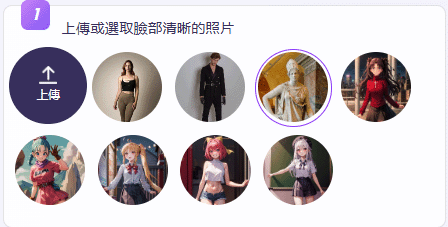

AI 跳舞生成器
Vidnoz AI 提供 照片轉 AI 跳舞影片 的功能。
透過 AI 技術讓靜態人物照片變成會跳舞的動態影片。
以下是 Vidnoz AI 生成會跳舞的動態影片的基本流程：
使用步驟
步驟 1：上傳照片或選取臉部清晰照片
前往 VIDNOZ 官方網站，上傳人像照片。
使用者可以上傳真人照片、動漫角色、卡通形象等，確保圖片清晰、五官完整。

步驟 2：選擇音樂舞蹈動作
Vidnoz AI 提供多種背景音樂與舞蹈風格。
步驟 3：點擊〝讓照片動起來〞
AI 透過動作捕捉技術，讓靜態人物按照選擇的舞蹈風格進行逼真的身體與肢體動作，保持流暢自然。
步驟 4：下載與分享
完成後，使用者可下載影片（MP4 格式）或直接分享至社群平台 (如 TikTok、Instagram、YouTube)。
完成
Vidnoz AI 照片轉跳舞影片 功能適用於 娛樂、社交媒體內容、虛擬形象創作，讓靜態照片變得更有趣！
注意事項
- 清晰度：建議使用 高清晰度、正面人像，避免模糊或低解析度的圖片，以獲得更好的動畫效果。
- 動作選擇：AI 會根據 預設的舞蹈模板 進行動畫生成，無法自訂動作。
- 背景影響：複雜背景可能影響 AI 的識別能力，建議選擇簡單背景的照片 以獲得最佳效果。
返回首頁